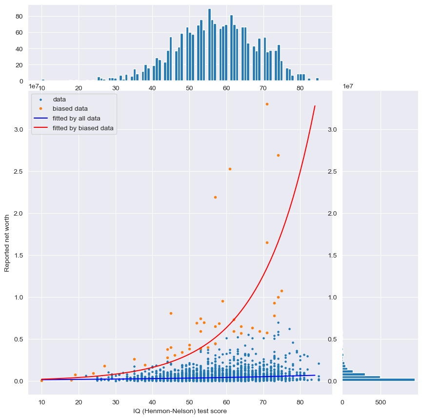

Nassim Taleb warns us of the dangers in misapplying linear statistical methods (e.g. regression, correlation) to compare a fat-tailed variable (e.g. wealth, income) to a thin-tailed one (e.g. IQ test scores) in his book "Statistical Consequences of Fat Tails". The fat tails - where the extremes lie and the outliers that shape our world reside - defy conventional analysis and prediction. While professionals in finance likes linear method and sometimes tends to pretend like financial crises are outliers that can be edited out in their risk models, a process known as "winsorization". In other realms, however, there is a tendency to focus too heavily on these extremes due to survivorship bias, creating a false narrative of non-linear, exponential success.
Consider the following scatter plot comparing people's wealth to their IQ scores. The wealth distribution, which follows a fat-tailed Pareto distribution, is contrasted with the IQ scores, which is normally distributed by design, as in the bell-shaped histograms under the scatter plot.

Survivorship bias shines a light on the top achievers—the red dots indicating the wealthiest 1% within each IQ category — skewing the perceived growth curve sharply upward. This contrasts with the more gradual blue curve, representing all the data points.1
While overemphasizing the negative tail (e.g. financial risk) can be beneficial, emphasizing the success stories, the "positive tail", can skew our perceptions. For instance, if we substitute IQ with the number of personal development strategies adopted from bestselling books, the principle holds. These strategies, such as early rising, voracious reading habits or rigorous self-discipline, gleaned from studying the ultra-successful, may not translate to wealth for the average person. Yet, we're often told that persistence and patience will lead to a compound growth payoff: slow in the beginning, then skyrockets to capture the top outliers and neglects the "ordinary" data points.
The concept of compound growth is widely endorsed, even from OpenAI's CEO Sam Altman:
Compounding is magic. Look for it everywhere. Exponential curves are the key to wealth generation. A medium-sized business that grows 50% in value every year becomes huge in a very short amount of time. Few businesses in the world have true network effects and extreme scalability. But with technology, more and more will. It's worth a lot of effort to find them and create them.
You may find similar figures in many places, including one of my favorite book:

This pattern is observable across different life choices, from investing to career paths. A foundational knowledge of finance and initial investments can yield more than inaction. However, a deep dive into the complexities of financial news, technical stock analysis, and day trading with options doesn't universally increase success chances, regardless of the few who succeed.
In career terms, "leveraged" positions, like those of authors, YouTubers, or tech startup entrepreneurs, are sold on the premise of high potential. Yet, these fields are often winner-take-all arenas, leading to a highly fat-tailed income distribution (80–20 Pareto distribution or even more extreme) with more obscured failures than visible successes. Starting these careers as a side hustle can be a window to their potential, but fully committing (getting further on the x-axis) doesn't guarantee the high rewards often promised.
Rob Copeland's recent book "The Fund: Ray Dalio, Bridgewater Associates, and the Unraveling of a Wall Street Legend" mentioned Ray Dalio's attempt to use personality tests to predict success at Bridgewater Associates. The tests reveal a curious pattern: many employees share similar traits with Dalio himself, a typical outcome of using thin-tailed variables to forecast fat-tailed ones. The "solution" was to craft an ever-growing list of principles, a set of rules to live and work by. Yet even with over 200 principles in play did not translate into exponential performance gains, i.e. as successful as Dailo himself.
-
Both curves are exponential curves fitted by OLS: $\log(y) = \alpha + \beta x$. ↩